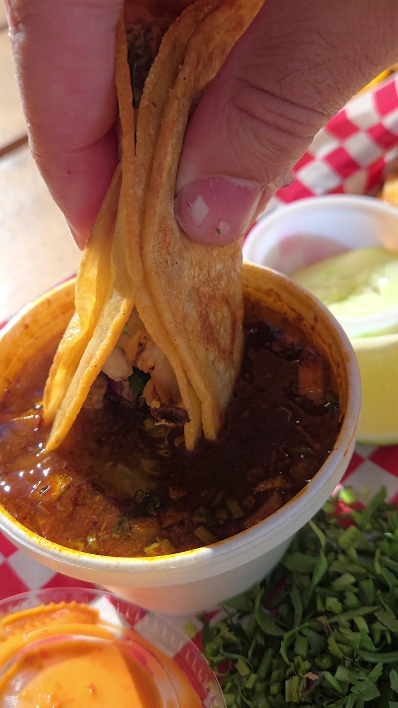

Birria tacos
Crispy shell, melted cheese and seasoned meat, served with hot consomé for dunking, plus lime, onions and cilantro.
Crispy birria tacos, hot egg rolls and string lights on S Alamo St.

Where to find us
1203 S Alamo St, San Antonio, TX 78210
Mon ClosedTue ClosedWed 2 PM–12 AMThu 2 PM–12 AMFri 2 PM–12 AMSat 2 PM–12 AMSun 2 PM–12 AM
DirectionsBirria tacos, egg rolls, bistek
Birria made to dunk
The plates to start with.
Crispy shell, melted cheese and seasoned meat, served with hot consomé for dunking, plus lime, onions and cilantro.

Hot and crunchy.

Mix asada and birria in a plate of mini tacos, or get bistek.

Birria, asada and bistek


4.5 ★ · 900 Google reviews
Best Birria tacos in San Antonio. Let me put you on game, crispy shell melted cheese seasoned meat..... then the DUNK in the hot consumè temperature hot not spicy hot, and the explosion of flavor put the lime onions and cilantro on it and im telling you and all the big backs across the world you will not be disappointed.
Everything. Was. SO. GOOD. Whew, ordered so much food just to try stuff and ended up eating and bringing til our stomachs ached. Probably the best birria I’ve had since coming to the city. Atmosphere was cute and everyone was so friendly.
Absolutely phenomenal birria tacos, the staff is too nonchalant about how good their food is. They are very kind and welcoming, and I’d recommend anyone to try these tacos.
Meet the crew
A green, white and red neon sign out front, string lights and picnic tables for eating outside.
Artwork on the walls, a friendly crew and food that comes out quick.